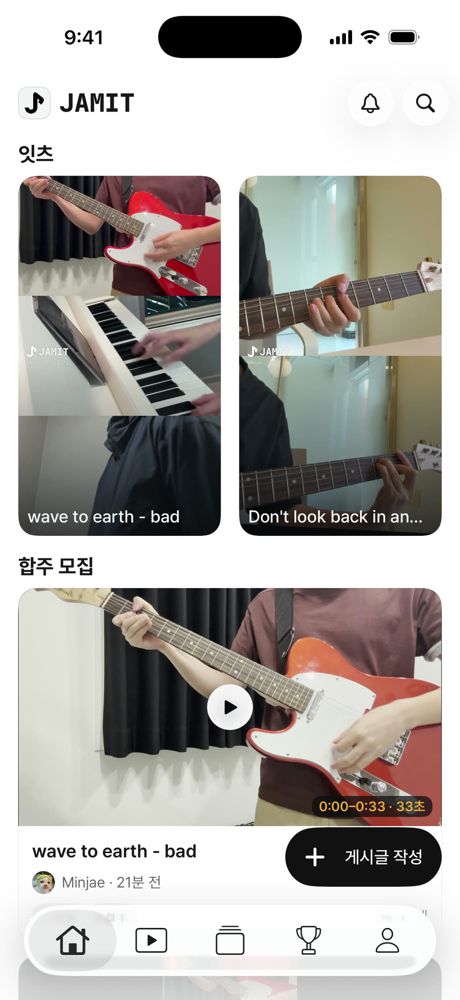
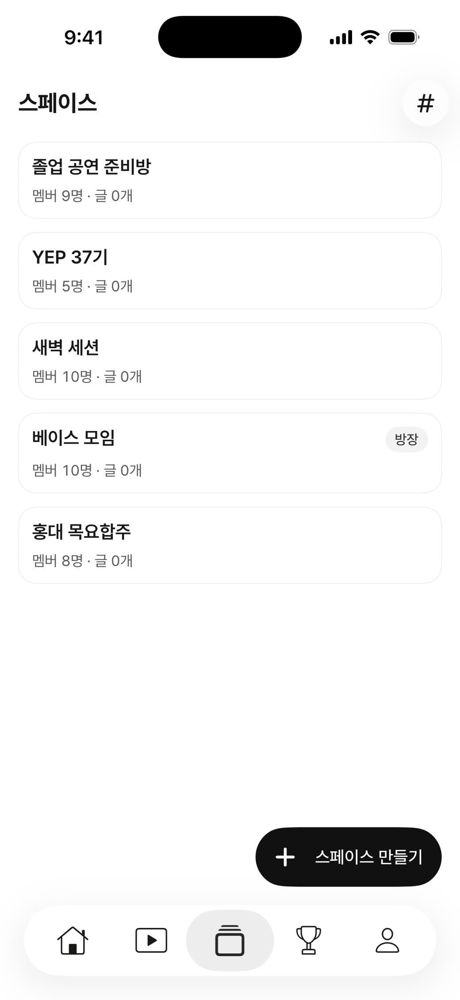
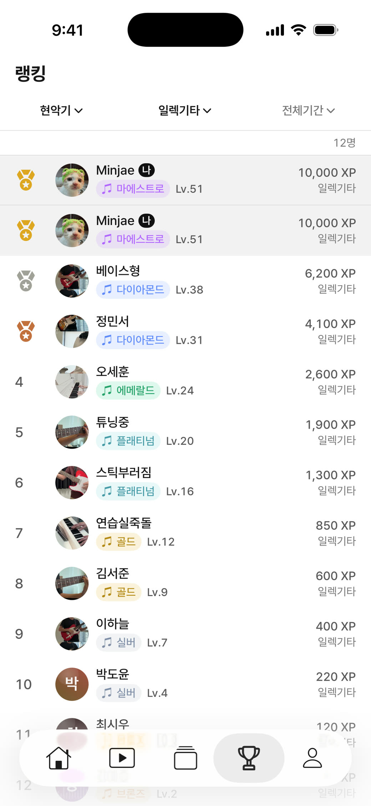
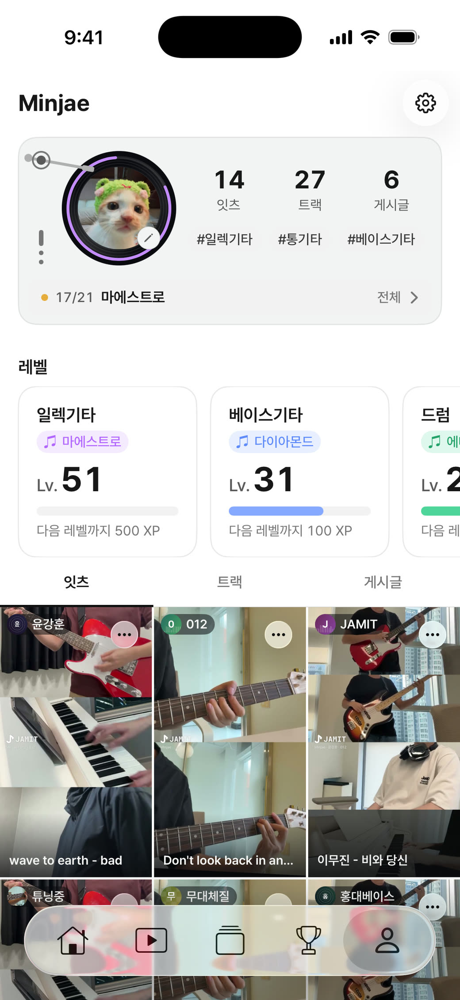
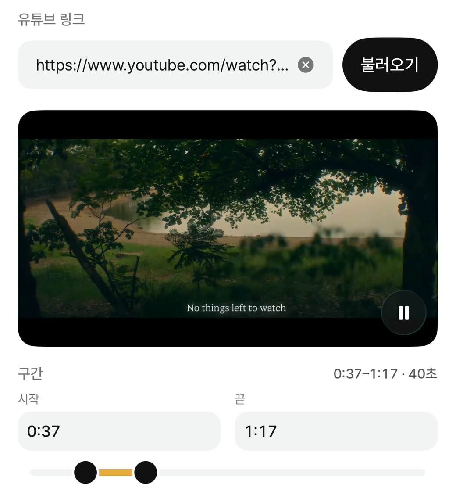

혼자 녹화한 연주가
합주가 되기까지
유튜브 영상이나 다른 사람의 연주를 들으며 내 파트를 더해보세요.
내 연주를 녹음하면 트랙 하나로 남아요.
마음에 드는 연주를 골라 하나의 곡으로 만들어보세요.
악기별 트랙을 자유롭게 조합할 수 있어요.
조합한 트랙을 보기 좋게 담아보세요.
순서와 크기, 위치와 회전을 마음대로 바꿔요.
이렇게 만든 합주 영상을 잇츠라고 불러요.
완성된 연주를 친구들에게 공유해보세요.
다른 사람들의 합주도 계속 이어서 보세요.
스크롤하면 다음 잇츠로 넘어가요.
RecordCameraScreen내 파트를 녹화하는 화면영상 없음
TrackSessionPickScreen조합할 트랙을 고르는 화면영상 없음
GridEditScreen세 칸으로 합주가 배치된 편집 화면영상 없음
ShortformPlayerScreen완성된 잇츠가 재생되는 화면영상 없음
ShortformPlayerScreen다음 잇츠가 재생되는 화면영상 없음
ShortformPlayerScreen다음 잇츠로 넘기는 화면영상 없음




합주 모집
혼자 연주하던 일상에
합주를 더해보세요
내 악기로 함께할 합주를 찾아보세요.
비공개 스페이스
우리끼리 모여
편하게 합주해보세요
친구와 함께하는 우리만의 연주 공간.
랭킹
같은 악기끼리
실력을 겨뤄보세요
악기별 랭킹에서 나의 위치를 확인해보세요.
마이페이지
나와 관련된 모든 것을
한곳에서 확인해보세요
업적과 레벨, 내가 만든 잇츠까지 여기 모여 있어요.
앱 안
누구나 편하게
이용할 수 있어요

녹음 싱크 측정
신호음이 기기를 빠져나와 마이크에 닿기까지를 재요.
이 값이 있어야 녹화한 트랙이 반주와 맞아요.
블루투스 · AirPods Pro
아직 측정 전
이어폰 한쪽을 기기 아래쪽 마이크에 대 주세요
신호음이 6번 울려요
측정 시작
녹화 그만두기
측정 중 · 0/6
측정 중단
측정 완료
완료
다시 측정